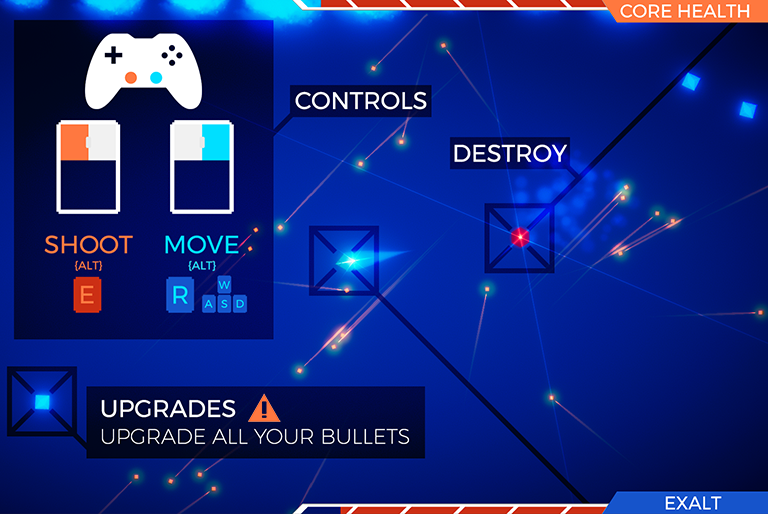

The Exalted
The Exalted is a solo Ludum Dare 40 entry built around the theme "the more you have, the worse it is": every bullet you fire stays on the field forever, and every upgrade you pick up makes your own past shots more dangerous too.
The Project
I read the theme as a warning about accumulation rather than a prompt about hoarding resources, so I built a shooter where the bullets you fire never despawn: they just sit on the field, permanently, as hazards you now have to dodge yourself. Picking up damage upgrades makes every one of those bullets hit harder too, including any that ricochet back at you, so getting stronger also means the field you're standing in gets more dangerous. The opponent is passive; you don't really lose to it, you lose to the pile of your own past actions catching up with you.
Controls
Controls were kept simple by design, since the whole game hinges on movement and positioning around a field you're actively making more dangerous with every shot you take.

Results
The Exalted finished 175th overall out of the jam's full field, with a strong 39th place finish on Theme, the category I cared most about nailing given how directly the core mechanic ties back to the prompt. Audio and Humor landed lower, which tracks with how little of the roughly four hours I spent on the soundtrack compared to everything else.
Post-Jam Reflection
The initial WebGL build on itch.io ran into deployment issues that cost me time I hadn't budgeted for, which was the clearest lesson from this jam: leave room after the timer stops for fixes and for actually promoting the thing, rather than treating submission as the finish line. Even so, I was glad to walk away with a complete, playable game and a theme score I was proud of.
The Exalted is playable in-browser on itch.io, with the full source and the Ludum Dare entry both up for anyone who wants the full jam writeup and ratings.